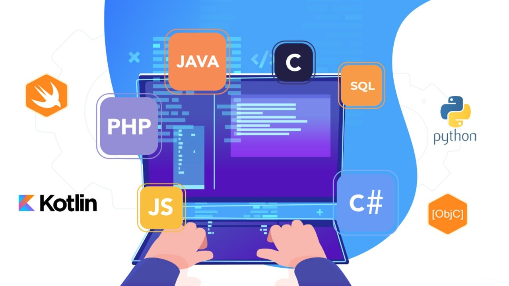
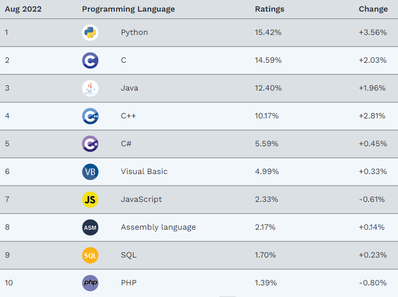
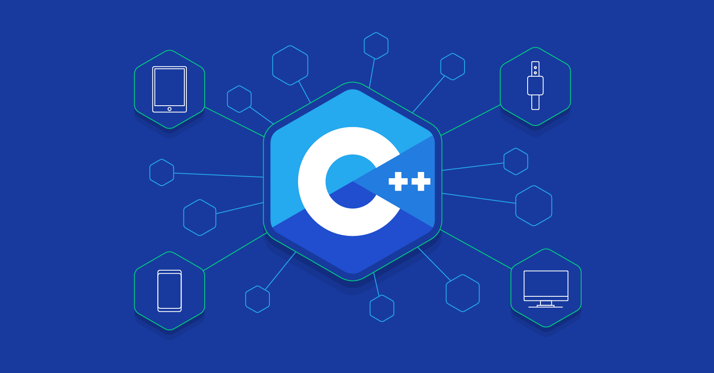

LENGUAJES DE PROGRAMACIÓN
Los lenguajes de programación más usados en la actualidad

Una buena muestra de la evolución del mundo técnico informático es la aparición de nuevos lenguajes de
programación. Si estás buscando escribir tu primera línea de código, seguro te estás preguntando cuáles son
los lenguajes de programación más utilizados o cuántos lenguajes de programación existen.
Aunque no hay una cifra exacta, se estima que en el mundo hay más de 200 lenguajes de programación. Hay
quienes suben la cifra a 700. Muchos han sido olvidados con el tiempo y no es algo de que sorprenderse.
Los lenguajes de programación son la base para escribir instrucciones, órdenes y algoritmos. Lo que conocemos
como código. Y con ese código hacemos funcionar máquinas físicas, dispositivos electrónicos, programas,
aplicaciones y demás software. En resumen, que necesitamos lenguajes de programación para crear código y
necesitamos código para comunicarnos con máquinas, ordenadores y aparatos en general.
Si quieres introducirte en este mundo o abrirte a mejores campos laborales, debes conocer cuáles son los
mejores lenguajes de programación y, así, decidir qué tecnología aprender, sobre todo, si estás iniciando tu
carrera en la industria del desarrollo web.
TIOBE es una empresa holandesa dedicada al análisis de código, la cual, analiza día a día más de 1.000
millones de líneas de código de desarrolladores públicos y privados de empresas de todo tipo. Y además de
eso son conocidos por confeccionar un índice con los lenguajes de programación más populares cada mes.

Ya sabiendo cuales son los lenguajes de programación más usados en la actualidad, a continuación, te
explicaremos más sobre cada lenguaje y conocerás por qué son los más demandados en este año 2022.
Python

Conocido como el lenguaje de la inteligencia artificial y las redes neuronales, dominarlo es una de las
competencias más requeridas por el mercado laboral. Como señaló Sergio Kaufman, presidente de Accenture
Argentina y Sudamérica Hispana, en la 26° Conferencia Industrial organizada por la Unión Industrial
Argentina: “Un profesional que puede vincular la inteligencia artificial con los mecanismos, máquinas
y objetos de producción, no tiene precio y su sueldo nunca va a ser suficientemente alto, porque genera
una serie de eficiencias escalonadas que justifican el valor de su ingreso.”
El 57% de los científicos de datos y desarrolladores de aprendizaje automático lo utilizan y 33%
lo prioriza para el desarrollo.
Hablar de Python es hacerlo de uno de los lenguajes de programación más usados desde hace mucho tiempo y
que, además continúa creciendo.
Creado por Guido Van Rossum en la década de los 90, este lenguaje multiparadigma y multipropósito
fue concebido como un “side-project” al igual que muchas tecnologías de esta lista de lenguajes
de programación más usados. De hecho, Python ha ganado mucha relevancia en industrias muy populares,
como la Inteligencia Artificial, el Machine Learning, entre otras.
Ventajas de Python:
Parte de la filosofía de Python es tener una curva de aprendizaje muy corta y una buena experiencia para el
desarrollador, con una sintaxis sencilla y muy fácil de entender, lo que permite que se ahorre tanto tiempo
como recursos.
En 2008, tuvo un gran crecimiento cuando se introdujeron grandes cambios y nuevas funcionalidades en su
versión Python 3. De hecho, la popularidad de las funciones de Python ha aumentado un 30.17% en el 2021 en
comparación con el 2020, de acuerdo con el índice PYPL. Por eso, podrás ver grandes avances y proyectos
llevados a la realidad gracias a este lenguaje de programación en el 2022.
Se trata de un lenguaje versátil con múltiples aplicaciones. De todas ellas podemos destacar la de la
Inteligencia Artificial, gracias a bibliotecas también muy populares como Keras o TensorFlow.
Un poco de su historia:
La historia del lenguaje de programación Python se remonta hacia finales de los 80s y principio de los
90s, su implementación comenzó en diciembre de 1989 cuando en Navidad Guido Van Rossum que trabajaba
en el (CWI) (un centro de investigación holandés de carácter oficial que, entre otras cosas, actualmente
alberga la oficina central del W3C) decidió empezar el proyecto como un pasatiempo dándole continuidad al
lenguaje de programación ABC del que había formado parte del equipo de desarrollo en el CWI, dicho lenguaje
se enfocaba en ser fácil de usar y aprender manteniendo potencia en su desempeño pero el hardware
disponible en la época de su creación hacía difícil su uso y el proyecto no trascendió como se esperaba.
Van Rossum es por tanto el autor principal de Python y continúa ejerciendo un rol central decidiendo la
dirección del lenguaje, en la comunidad de Python se le conoce como Benevolente Dictador Vitalicio
(en inglés: Benevolent Dictator for Life, BDFL). El nombre "Python" viene dado por la afición de Van
Rossum al grupo Monty Python.
El lenguaje de programación Python fue originalmente desarrollado para el sistema operativo Amoeba.
C

Bajando un puesto y siendo destronado por Python, pero con una grandísima cuota de mercado, como uno de
los lenguajes de programación más usados en la actualidad encontramos a C. Es uno de los primeros lenguajes
y forma la base de otros más actuales como C++, C# o Java. Con él podemos desarrollar tanto aplicaciones
como sistemas operativos. El lenguaje C está pensado para proyectos pequeños o medianos, puesto que, al ser
el primer lenguaje de este tipo, tiene algunas limitaciones.
Este lenguaje fue desarrollado entre 1969 y 1972 por Dennis M. Ritchie, como evolución del anterior lenguaje B.
Está orientado al desarrollo de software de sistemas, aunque también es útil para la creación de
aplicaciones.
Compiladores como el de Python y PHP están escritos en C; esto habla de la gran relevancia que tiene hasta la
actualidad, pues de este han salido diversos tipos de lenguajes de programación.
Es un lenguaje que requiere de mucha práctica para tener un buen dominio del mismo, pero destaca por la
eficiencia de su código. Como es de carácter general, ofrece control absoluto sobre los programas que
crea, realizando funciones tanto de alto como de bajo nivel.
Múltiples sistemas operativos y herramientas que utilizas en la actualidad han sido construidos con este
lenguaje de programación de alto nivel
Ventajas de C
Este lenguaje de procedimientos y de propósito general es uno de los primeros lenguajes de programación que
ha servido inspiración para otros lenguajes, que también ofrece acceso directo a la memoria y al hardware de
las computadoras.
Este lenguaje de programación, de tipos de datos estáticos, es valorado por la facilidad de uso y la eficiencia
del código que produce. Además, es un lenguaje de alto nivel, que también permite programar en bajo.
Un poco de su historia:
El desarrollo inicial de C se llevó a cabo en los Laboratorios Bell de AT&T entre 1969 y 1973; según Dennis
Ritchie, el periodo más creativo tuvo lugar en 1972. Se le dio el nombre "C" porque muchas de sus
características fueron tomadas de un lenguaje anterior llamado "B".
Pero, ¿por qué se creó el lenguaje de programación C? El objetivo era encontrar un compilador que garantizará
la consistencia y la velocidad de cada terminal, y entender mejor el sistema operativo Unix. En pocas
palabras, lo que se quería era un sistema operativo eficiente que pudiera evolucionar sin sufrir vergonzosas
ralentizaciones.
Fue para el año de 1973, que el lenguaje C estaba lo suficientemente maduro como para que el 90% de UNIX pudiera
reescribirse con él. Y en 1974, los laboratorios Bell concedieron la licencia de UNIX a las universidades, y
así fue como se empezó a distribuir el lenguaje C.
Java

Otro de los lenguajes que lleva tiempo entre nosotros y desde luego pareciera que va a quedarse bastante
más es Java. Desde hace ya un tiempo juega un papel fundamental en el desarrollo de videojuegos y aplicaciones
empresariales, además de utilizarse en procesos de diferentes tipos de dispositivos. Debido a este poder de
permanencia es que radica su popularidad.
En los 90 muchas empresas desarrollaban sus herramientas principalmente en C++, el cual era complicado y
dependiente de la plataforma en la que este se estructurara.
Por tal motivo, James Gosling y su equipo crearon una tecnología que prometía ser más fácil de aprender,
obteniendo uno de los lenguajes de programación más utilizados en la actualidad.
Ventajas de Java
Este es un lenguaje de programación orientado a objetos e independiente de su plataforma, por lo que el código
que ha sido escrito en una máquina también correrá en otra, incluso, con sistemas operativos distintos gracias
a la Máquina Virtual Java (o JVM por sus siglas en inglés).
Empresas como Adobe, Amazon o Flipkart están utilizando este lenguaje de programación, y ofrecen excelentes
oportunidades profesionales a los desarrolladores de Java.
En cuanto al ámbito de aplicación de Java, esta es otra de sus ventajas, ya que resulta muy amplio, lo que
te permitirá crear desde aplicaciones web a servicios web basados en SOAP o REST, y aplicaciones de
escritorio, de consola o interfaz gráfica. Lo que incluye aplicaciones empresariales para múltiples sectores
(servicios financieros, sanidad e industrias manufactureras, entre otros).
El objetivo de Java reside en permitir que los desarrolladores de aplicaciones escriban el código una sola vez y
que pueda ser ejecutado en cualquier lugar. Una particularidad a la que se denomina WORA (Write Once, Run
Anywhere / Escribe una vez, corre en cualquier lugar). Esto significa que su código compilado puede
ejecutarse en cualquier plataforma que admita Java sin la necesidad de volver a ser compilado.
Es multihilo, realiza varias tareas simultáneamente dentro del mismo programa, mejorando el rendimiento y
la velocidad de ejecución.
Un poco de historia:
Java se creó como una herramienta de programación para ser usada en un proyecto de set-top-box en una
pequeña operación denominada the Green Project en Sun Microsystems en 1991. El equipo (Green Team),
compuesto por trece personas y dirigido por James Gosling, trabajó durante 18 meses en Sand Hill
Road, en Menlo Park, para desarrollarlo.
Los objetivos de Gosling eran implementar una máquina virtual y un lenguaje con una estructura
y sintaxis similar a C++. Entre junio y julio de 1994, tras una sesión maratoniana de tres días
entre John Gage, James Gosling, Patrick Naughton, Wayne Rosing y Eric Schmidt, el equipo reorientó
la plataforma hacia la Web. Sintieron que la llegada del navegador web Mosaic propiciaría que
Internet se convirtiese en un medio interactivo, como el que pensaban era la televisión por cable.
Naughton creó entonces un prototipo de navegador, WebRunner, que más tarde sería conocido como HotJava.
En 1994, se les hizo una demostración de HotJava y la plataforma Java a los ejecutivos de Sun.
Java 1.0a pudo descargarse por primera vez en 1994, pero hubo que esperar al 23 de mayo de 1995,
durante las conferencias de SunWorld, a que vieran la luz pública Java y HotJava, el navegador Web.
El acontecimiento fue anunciado por John Gage, el director científico de Sun Microsystems. El acto
estuvo acompañado por una pequeña sorpresa adicional, el anuncio por parte de Marc Andreessen,
vicepresidente ejecutivo de Netscape, de que Java sería soportado en sus navegadores. El 9 de enero
del año siguiente, 1996, Sun fundó el grupo empresarial JavaSoft para que se encargase del desarrollo
tecnológico. Dos semanas más tarde la primera versión de Java fue publicada.
C++

Este lenguaje de programación multiparadigma vio la luz en la década del 70, y como te imaginarás, está
fuertemente influenciado y basado en C, con la finalidad de agregarle funcionalidades de orientación a
objetos.
Al igual que su predecesor, este lenguaje de programación compila directamente a instrucciones de máquina y
ofrece acceso completo al hardware, pero de una manera más compleja. Se utiliza ampliamente en bases de
datos, navegadores web, compiladores o videojuegos.
Al ser uno de los lenguajes más difíciles de aprender, C++ ha ido perdiendo aceptación frente a Java. Aun
así, sigue siendo uno de los lenguajes preferidos entre programadores y desarrolladores, ya que ofrece un
rápido mecanismo de procesamiento y compilación.
Ventajas de C++
C++ se caracteriza por ser extremadamente rápido y estable, lo que lo sitúa como uno de los mejores
lenguajes de programación y, por tanto, también uno de los lenguajes de programación más usados.
Una de las principales características de C++ es su extrema rapidez y estabilidad. Cuenta con STL
(biblioteca de plantillas estándar), en otras palabras, un conjunto de bibliotecas preparadas para
poder usar diversas estructuras de datos, operaciones aritméticas y algoritmos. Contar con el soporte
de estas bibliotecas y su velocidad como lenguaje lo convierten en uno de los lenguajes de programación
favoritos entre la comunidad comercial de HFT (High Frecuency Trading).
Un poco de su historia:
La historia nos remonta a la figura de Denis Ritchie, quien introdujo por primera vez el lenguaje de
programación C en los Laboratorios Bell de AT&T en 1972 y se implementó por primera vez en la computadora
DEC PDP-11. Denise Ritchie usó los conceptos de BCPL y B para desarrollar C y agregó la tipificación de
datos y algunas otras características poderosas.
Después, en 1979, Bjarne Stroustrup, también empleado de Bell AT & T, comenzó a trabajar en el lenguaje C
con las clases. Tomó prestadas las características deseables de muchos otros lenguajes como Simula, Ada,
ML, CLU y ALGOL 68. Por lo tanto, además de las características del lenguaje C, C ++ también incluía
clases, verificación de tipo fuerte, argumento de función predeterminada y herencia básica. Hasta 1983,
se llamaba C con clases, y en 1983 se llamaba C ++.
Fascinado por el enfoque orientado a objetos Stroustrup comenzó a trabajar en C con clases, es decir, comenzó
a trabajar en un nuevo lenguaje que tendría un paradigma orientado a objetos mezclado con las
características del lenguaje de programación C.
La primera edición comercial del lenguaje de programación C ++ se lanzó en octubre de 1985.
C#

En cuanto a C# debemos aclarar que se trata de un lenguaje de programación creado por Microsoft, y que
por norma general suele utilizarse en entornos empresariales como en instituciones gubernamentales,
entidades bancarias o sanitarias.
Pronunciado “C Sharp”, fue desarrollado por Microsoft e introducido en el mercado en 2002 con la versión
1.0 de .NET Framework. Desde entonces, C # ha pasado por varias revisiones, correspondientes a cada
actualización de .NET.
Este lenguaje de programación posee características como C, pero orientado a objetos y caracterizado,
principalmente, por su modernidad y sencillez. Estas son las claves que le hacen posicionarse en el top 5
de lenguajes de programación preferidos en la actualidad.
Ventajas de C#
Este lenguaje de programación es muy utilizado en la industria del gaming, la robótica, la impresión 3D, los
controladores y las aplicaciones de escritorio no solo en Windows, sino también en iOS y en Android. Es, por
lo tanto, muy versátil, y una de sus principales ventajas es que, si ya dominas Java, te será muy fácil
aprender a programar en C#, por lo que te recomendamos no perderlo de vista.
Un poco de su historia:
En enero de 1999, Anders Hejlsberg formó un equipo para construir un nuevo lenguaje en ese momento llamado
Cool, que en inglés significaba “lenguaje orientado a objetos tipo C”. Microsoft había considerado mantener el
nombre “Cool” como el nombre final del lenguaje, pero decidió no hacerlo por razones de marca registrada.
Para cuando el proyecto .NET se anunció públicamente en la Conferencia de Desarrolladores Profesionales de
julio de 2000, el lenguaje había sido renombrado como C#, y las bibliotecas de clases y el tiempo de ejecución
de ASP.NET habían sido portados a C #.
El principal diseñador y arquitecto principal de C # en Microsoft es Anders Hejlsberg, en entrevistas y
documentos técnicos, ha declarado que las fallas en la mayoría de los lenguajes de programación
más importantes (por ejemplo, C ++, Java, Delphi y Smalltalk) impulsaron los fundamentos del Common
Language Runtime (CLR), que, a su vez, impulsó el diseño del lenguaje C # sí mismo.